Winnand Simpit - Build Journal
An F/A-18 style flight stick, throttle, and rudder pedal set for flight simulators. It uses Hall effect sensors on every axis, connects its modules with Ethernet cables, and was designed in Fusion 360. Total time: 44.5h.
12/5/2025 - Gathered Items for BOM
Time spent: 2.5h
The first thing I did was come up with a few soft requirements for my project in my head:
- 2 axis joystick, 1 axis throttle, 1 axis rudder, 2 axes for brakes (L/R), 2 axis thumbstick
- Hall effect sensors for all axes (8 total)
- 3x four way hats (like a D-pad)
- F/A-18 styling
I found a model for an F/A-18 joystick, from which I got some components I needed:
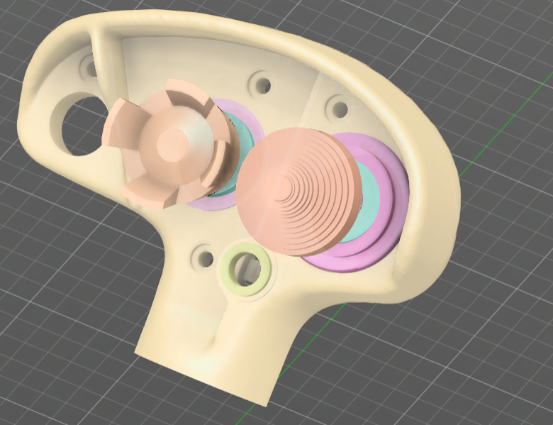
I then added a few components I knew I would need, like magnets, a Teensy 4.1, and Hall effect sensors. I searched for these items on Amazon initially, but I found out that AliExpress sells a lot of these DIY-centric items for cheap, and the small items like electronics and hardware can be of decent quality.
12/6/2025 - Worked on Gimbal CAD Model
Time spent: 4.0h
I found models of a gimbal that was compatible with the model of the stick. I tried to get the part of the old
stick to become a solid object from a mesh for about 40 minutes, but it didn't work. In the end, I settled for
it being just a faceted solid. I figured out how the gimbal worked and got the stick-gimbal adaptor to fit into
the gimbal to see how I would use it. A problem I had is that the gimbal used weird sensors which I wasn't
using, so I had to find a way to adapt it to the sensors I'm using.
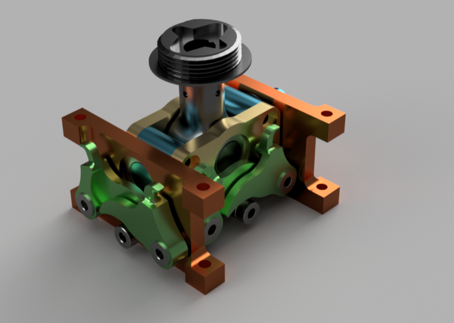
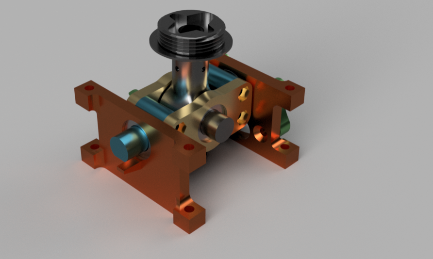
1/9/2026 - More CAD
Time spent: 7.0h
I wanted to see how the joystick would work when it was done, so I made some joints and tangent relationships
in Fusion to simulate the mechanism:
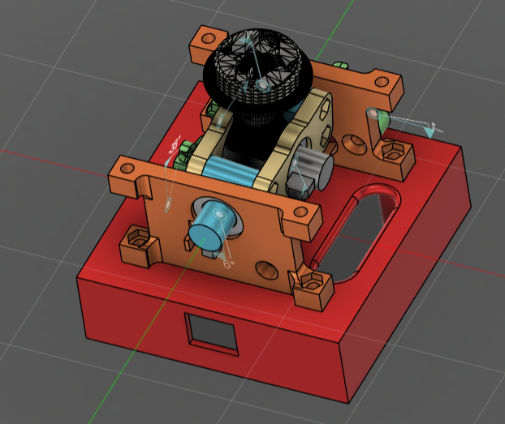
After that, I started to work on the case that would hold the gimbal. I tracked down the dimensions of the
Blue Pill board that I would use and made a space for it:
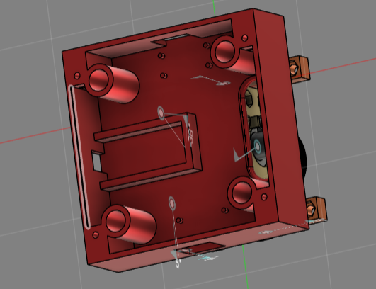
Also, I decided to use Ethernet breakout boards and cables from AliExpress to connect the throttle and rudder
pedals. I made studs to locate the board and holes for the port. After that, I made extrusions on the edges to
mount the bottom cap / table clamp mounts. Then, I made cutouts of the nuts and space to insert them so that
the bottom can be secure.
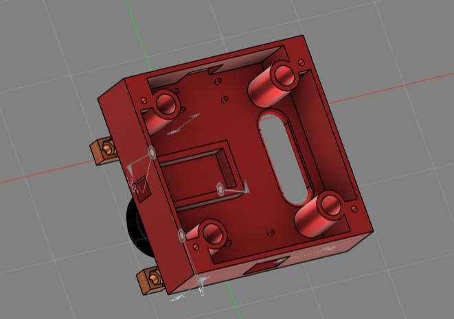
I also made a little progress on the rudder pedals. I found the Taumelscheibe rudder pedals on
Thingiverse
and decided to make my own mechanism, but use his pedals because they were adjustable and looked cool:
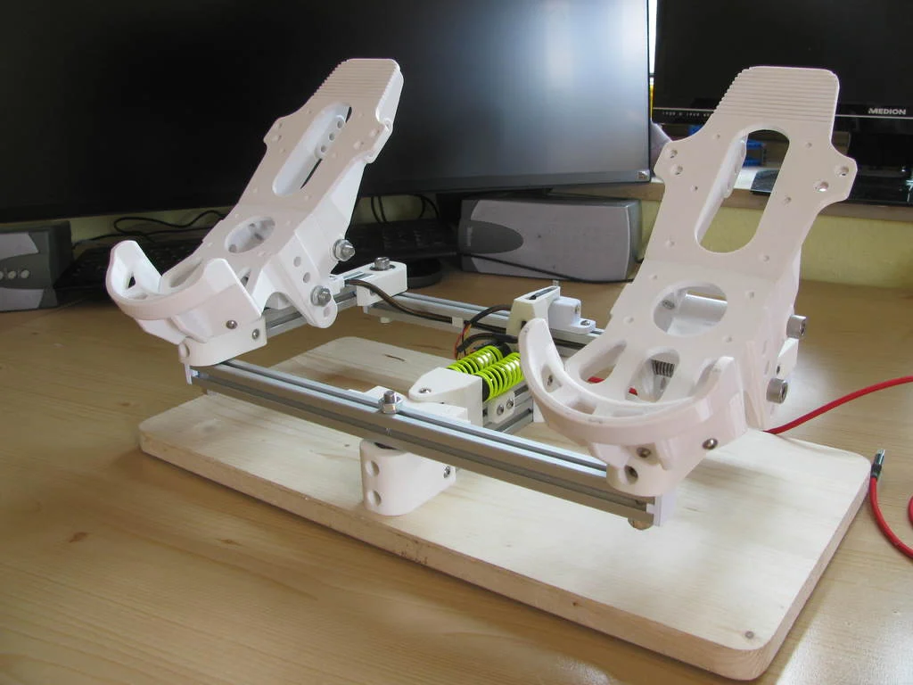
I also explored generative design and evaluated whether it would work in my project.
1/22/2026 - Finished CAD for the Joystick
Time spent: 3.0h
After finishing part of the joystick from the last journal, I had to finish the rest of the case. For the
bottom, I made the bottom plate have dovetails to clamp to my table. I found a model online for the C-clamp,
and modified it to have dovetails and support for them.
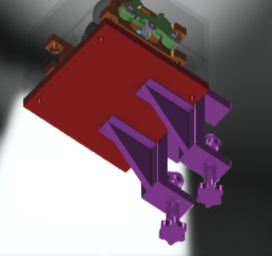
I then looked for 3D models for the throttle on the OpenHornet project, but eventually found a Fusion 360 file for the F/A-18 throttle, and used that.
2/11/2026 - Completed the CAD of the Throttle
Time spent: 6.0h
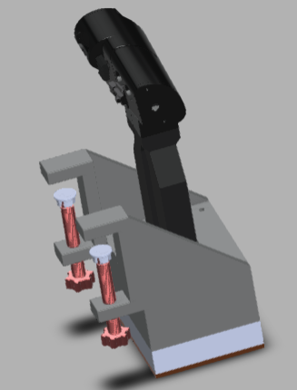
I completed the CAD for the throttle. I took the handle from the Flight Sim Throttle by Tacticaltactics on
Thingiverse, and designed the rest. I was considering using the RC damper on the original design for friction,
but I decided to use O-rings instead. They go around the bearings and should provide a smooth friction. I also
used the same bearing mounts, magnet holders, and Hall effect sensor mounts from the joystick. I made it screw
together with M5 nuts and screws.
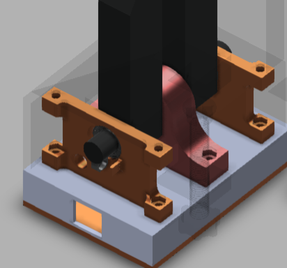
I also designed in the hole for the Ethernet jack using the same sketch from the joystick:
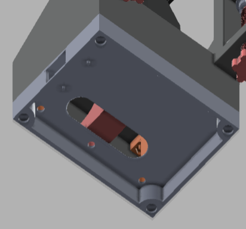
My next steps are to design the rudder pedals and update the BOM with more bearings and screws.
3/5/2026 - Finished CAD of the Rudders
Time spent: 15.0h
When I was looking for some rudder designs, I came across Taumelscheibe's Einheitspedals, which he reverse
engineered from a German plane. I liked that design, so I decided to use those pedals in my design. I imported
them into Fusion using the archive file, and started working from there.
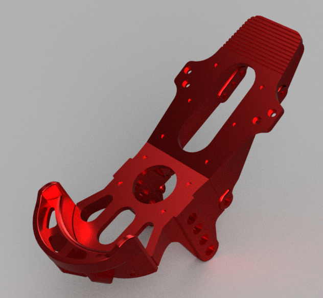
The first thing I did was make a platform for the pedals to rest and pivot upon. I also made it so I would
have a brakes axis for the pedals using a magnet and Hall effect sensor. I made an offshoot of the platform to
hold the sensor, and used some sketches to align the magnet holder on the pedal to the sensor on the platform,
and I did some SOH CAH TOA to find out how far away from the pivot the magnet should be to get 5mm of travel.
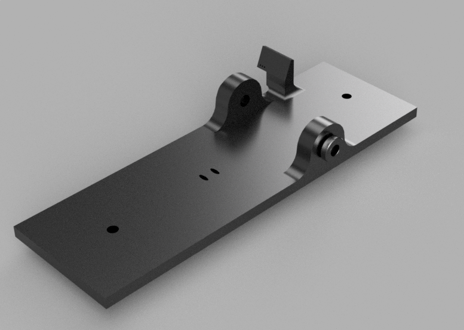
Next, I put a structure in the middle which would hold the arms. For the arms, I wanted to use generative
design. I wanted the cool fluted design that's typically associated with that, but I only got a curved member.
To make Fusion generate the design, I had to set preserve geometry, avoid geometry, goals, loads, and
manufacturing constraints. I then sent off the job to the cloud. I did this process several times to get to
the final set of arms seen in my design.
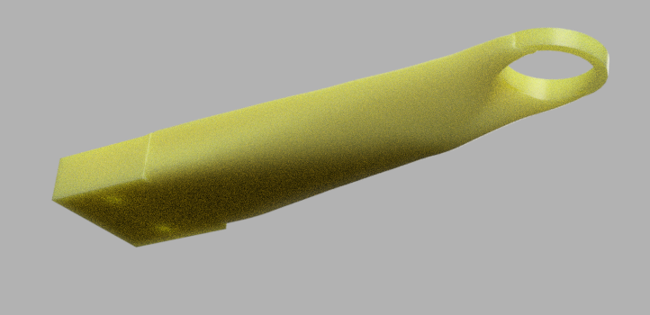
I then worked on the middle portion. I made the bearing holders and inserted the bearings' CAD from
McMaster-Carr in Fusion. I designed the sensor holder using the CAD from the other parts. I made it so there
were two opposing magnets that come closer or farther to the sensor for sensing the rudder axis.
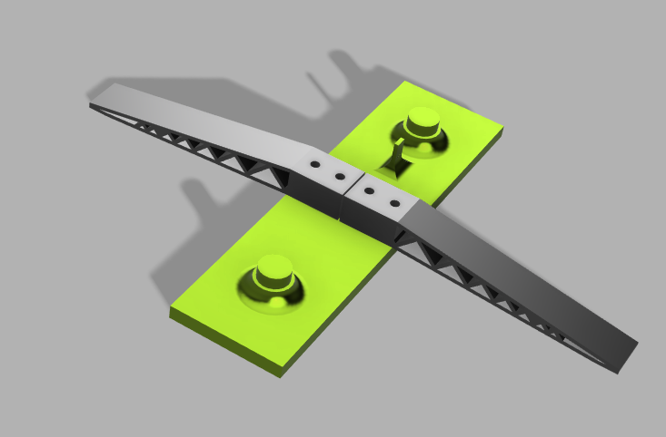
Here is a final render:
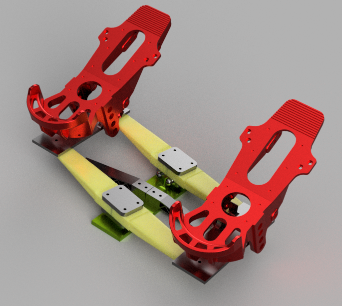
3/5/2026 - Full CAD Model and Finished BOM
Time spent: 3.0h
I wanted to visualize how the final model would look, so I inserted all the modules and created a desk. I
moved the modules to their respective places and made a render of it.
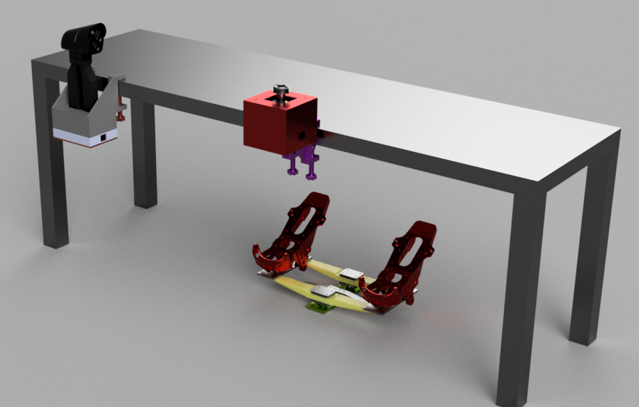
Until now, the BOM was based on the work I'd done on the joystick and the grip. I updated it to include the limit switches in TheSimNet's trigger module. I also realized that I needed a lot more bearings, especially the 6802 bearings. I counted and found out I needed 14 of them, but the AliExpress listing only sold 5 pcs with a limit of 1 per customer. So I found a different product with 15 pcs and put that on the BOM. I also had to count the screws that I used and found out I needed to add M4 nuts and bolts, as well as get more M5 bolts. Since a lot of the screw lengths need to be different, for each screw type, I got the longest one and plan to cut them down later. Doing it like this reduced the cost significantly, by at least $20. I also bought 2 Ethernet cables to connect all the modules together, one long and one short.
I added a new column for the minimum required quantity of each item, so that whoever has some of the materials can go off that instead of needing to buy everything. At this point, the BOM is looking to be ~$90, about the same as my custom keyboard project.
3/24/2026 - Created Schematics
Time spent: 4.0h
I used Fusion's electrical workflow to make schematics of all the modules. It was a good thing I did, since it
decided how I would use the 8 wires in each module. I learned how to connect shift registers and ADCs to the
microcontroller, and how to use the schematic maker in Fusion. I also had to import some components from a
website into Fusion so I could put them in the schematics. Here are the images of the schematics:
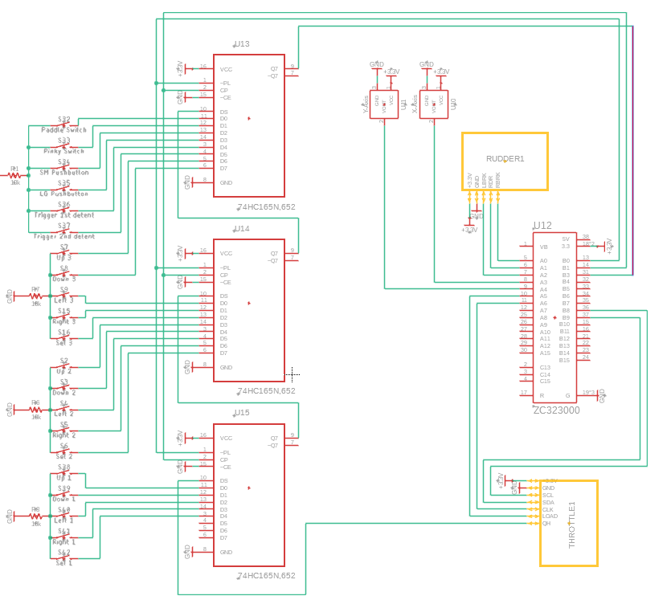
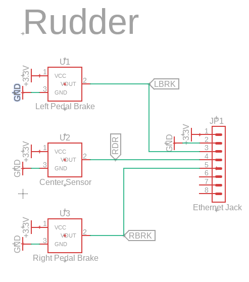
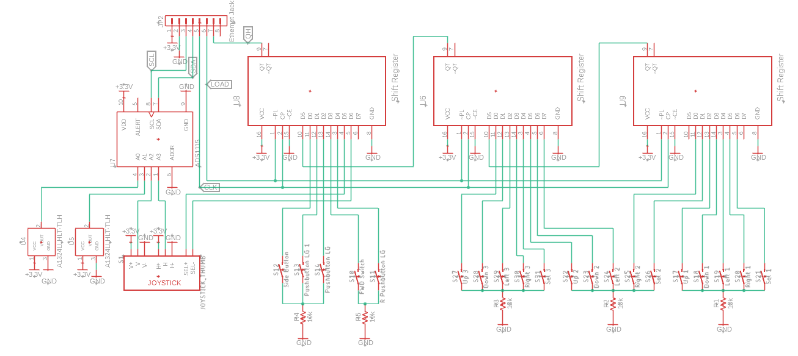
After this, I just need to finish the README and add all the items to my AliExpress cart, then I will be able to submit.